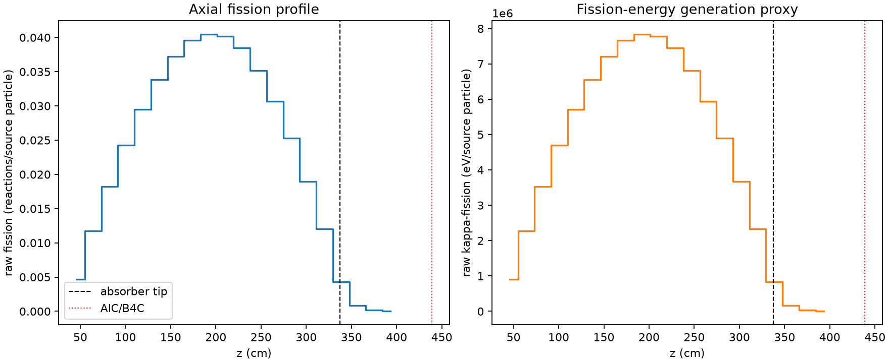
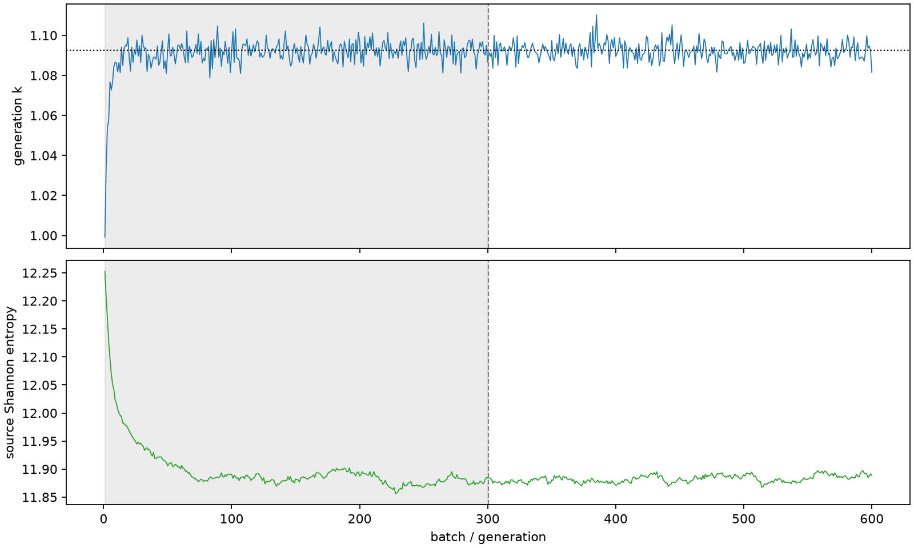

| field | value |
|---|---|
| experiment | V2-ADAPTIVE_01-0031 |
| k | 1.0924121655266614 |
| MC standard error | 0.00017172320305191557 |
| seconds | 1184.6466921829851 |
| acceptance | not_assessed |
| convergence | review_required |
Completed is output integrity only; physical and statistical review required. Zero tallies do not prove zero production or zero uncertainty.
| diagnostic | value |
|---|---|
| geometric fuel voxels | 5280 |
| zero fission tally voxels | 0 |
| low signal fuel voxels | 213 |
| low signal fission share | 7.2862137872779e-05 |
| low signal kappa share | 7.289183794376507e-05 |
| important fission share | 0.950076921764983 |
| previous filter included | 5067 |
| duration estimate s | 1562.5173488400023 |
| actual minus estimate s | -377.8706566570172 |
| fission relative MC error | statistics |
|---|---|
| all_geometric_fuel | {"voxels": 5280, "positive_mean_voxels": 5280, "zero_mean_voxels": 0, "undefined_relative_error_voxels": 0, "median": 0.01004589873278573, "p95": 0.14477834474793055, "maximum": 0.3827035074874476} |
| low_signal | {"voxels": 213, "positive_mean_voxels": 213, "zero_mean_voxels": 0, "undefined_relative_error_voxels": 0, "median": 0.2302959988126336, "p95": 0.3145131648917357, "maximum": 0.3827035074874476} |
| important_95pct | {"voxels": 3683, "positive_mean_voxels": 3683, "zero_mean_voxels": 0, "undefined_relative_error_voxels": 0, "median": 0.008819901246926904, "p95": 0.013726135998655846, "maximum": 0.016547619120611652} |
| outside_previous_filter | {"voxels": 213, "positive_mean_voxels": 213, "zero_mean_voxels": 0, "undefined_relative_error_voxels": 0, "median": 0.2302959988126336, "p95": 0.3145131648917357, "maximum": 0.3827035074874476} |
| kappa_fission relative MC error | statistics |
|---|---|
| all_geometric_fuel | {"voxels": 5280, "positive_mean_voxels": 5280, "zero_mean_voxels": 0, "undefined_relative_error_voxels": 0, "median": 0.010032984734354933, "p95": 0.14456705926387992, "maximum": 0.38171245662967285} |
| low_signal | {"voxels": 213, "positive_mean_voxels": 213, "zero_mean_voxels": 0, "undefined_relative_error_voxels": 0, "median": 0.22978961586748084, "p95": 0.3139268372275213, "maximum": 0.38171245662967285} |
| important_95pct | {"voxels": 3683, "positive_mean_voxels": 3683, "zero_mean_voxels": 0, "undefined_relative_error_voxels": 0, "median": 0.00880852117977819, "p95": 0.013710177819669435, "maximum": 0.016528695203690033} |
| outside_previous_filter | {"voxels": 213, "positive_mean_voxels": 213, "zero_mean_voxels": 0, "undefined_relative_error_voxels": 0, "median": 0.22978961586748084, "p95": 0.3139268372275213, "maximum": 0.38171245662967285} |
| axial bin | fission share | kappa-fission share |
|---|---|---|
| 1 | 0.010484724735037391 | 0.010485260960201224 |
| 2 | 0.02635009289861329 | 0.0263500766239872 |
| 3 | 0.040942442243453975 | 0.040942339405977746 |
| 4 | 0.054478284700695566 | 0.05447789249710346 |
| 5 | 0.06611495111565174 | 0.06611450612898125 |
| 6 | 0.07593275432805299 | 0.07593239479485049 |
| 7 | 0.08357044915878813 | 0.08357032835649689 |
| 8 | 0.08877474832127821 | 0.0887744216680782 |
| 9 | 0.09074342025622815 | 0.09074336745277937 |
| 10 | 0.090170795986671 | 0.09017049362725729 |
| 11 | 0.08636682094654693 | 0.08636657783171323 |
| 12 | 0.07884494383274669 | 0.07884506456534077 |
| 13 | 0.06886144494805704 | 0.06886134456379245 |
| 14 | 0.05674423070199718 | 0.056743994278718485 |
| 15 | 0.04253588501716181 | 0.04253573574871391 |
| 16 | 0.02693936172395963 | 0.026939178325631377 |
| 17 | 0.009718173256470706 | 0.009719535427543946 |
| 18 | 0.001897991970538644 | 0.0018987892535887395 |
| 19 | 0.0004369851409262527 | 0.0004371620976824209 |
| 20 | 9.149871712460198e-05 | 9.153639156179364e-05 |
Histories include the inactive-to-active transition at batch 300. kappa-fission approximates fission energy production, not total heat deposition.

